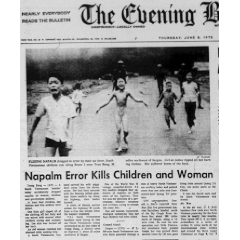

Documenti
Ordina per:
A-Z,
Z-A,
Più recente,
Meno recente
Sul Genocidio
di
J.-P. Sartre
Report from North Vietnam
di
Malcolm Caldwell

The Napalm Bomb
di
Masahiro Hashimoto
Report on Chemical Warfare in
Vietnam di
Edgar Lederer
The United States and Laos
di
Wilfred Burchett
Conditions in Diem’s Prisons
di
Nguyen Thi Tho